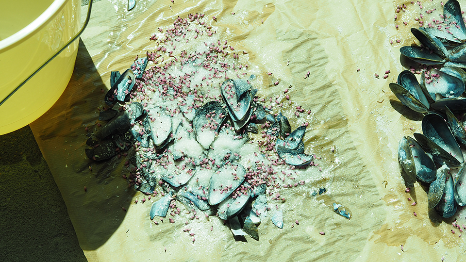

Focul care Arde (The Fire that Burns) - work in progress
Various materials, audio speakers broadcasting a song composed by the artist Harilay Rabanjamina for the installation,
text written along the trip from France to Romania, translate from French to Romanian and prints on sheets to take away
Timişoara French Institute, Romania
February 2020

GENERATOR #6, 40mcube art center, Rennes - work in studio
Mussel shell, salt, eather heather flowers tops
Liffré
April 2020

GENERATOR #6, 40mcube art center, Rennes - work in studio
Liffré
April 2020